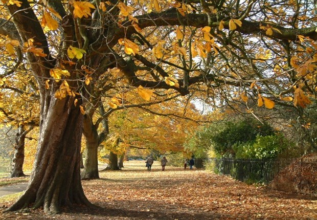

 When I feel that chill, smell that fresh cut grass I'm back in my helmet, cleats, and shoulder pads Standing in the huddle, listening to the call Fans going crazy for the boys of fall They didn't let just anybody in that club Took every ounce of heart and sweat and blood To get to wear those game-day jerseys down the hall The kings of the school, man, we're the boys of fall Well it's turn to face the stars and stripes It's fighting back them butterflies It's call it in the air, alright Yes sir, we want the ball And it's knocking heads and talking trash It's slinging mud and dirt and grass It's I got your number, I got your back When your back's against the wall You mess with one man, you got us all The boys of fall In little towns like mine, that's all they've got Newspaper clippings fill the coffee shops The old men will always think they know it all Young girls will dream about the boys of fall Well it's turn and face the stars and stripes It's fighting back them butterflies It's call it in the air, alright Yes sir, we want the ball And it's knocking heads and talking trash It's slinging mud and dirt and grass It's I got your number, I got your back When your back's against the wall You mess with one man, you got us all The boys of fall Well it's turn and face the stars and stripes It's fighting back them butterflies It's call it in the air, alright Yes sir, we want the ball And it's knocking heads and talking trash It's slinging mud and dirt and grass It's I got your number, I got your back When your back's against the wall You mess with one man, you got us all The boys of fall We're the boys of fall We're the boys of fall We're the boys of fall We're the boys of fall